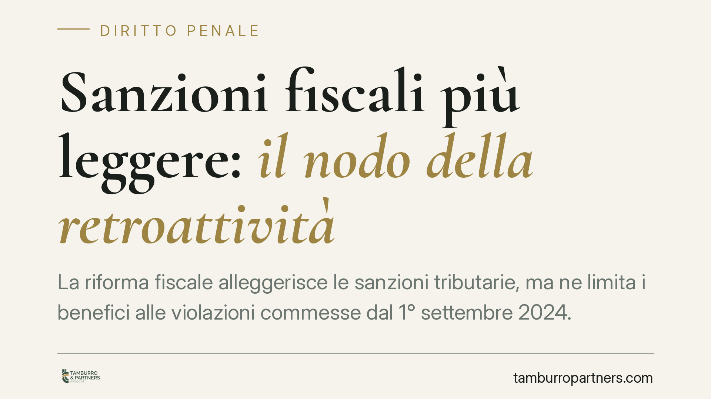

Sanzioni fiscali più leggere: il nodo della retroattività
La riforma fiscale alleggerisce le sanzioni tributarie, ma ne limita i benefici alle violazioni commesse dal 1° settembre 2024. Un orientamento della Cassazione avalla il blocco della retroattività favorevole; parte della giurisprudenza di merito, richiamando il diritto UE, chiede invece di applicare la norma più mite anche al passato. La posta in gioco è alta, soprattutto per IVA e dogane.

Il fatto: sanzioni ridotte, ma non per tutti
Il D.lgs. 87/2024 ha riformato il sistema sanzionatorio tributario, riducendo in modo significativo le misure applicabili a numerose violazioni. Il legislatore, però, ha limitato i benefici alle violazioni commesse a partire dal 1° settembre 2024, escludendo l'applicazione retroattiva alle condotte anteriori.
Da qui il contenzioso. Il contribuente sanzionato prima di quella data, infatti, resta assoggettato al regime previgente, più severo, anche se oggi la stessa condotta sarebbe punita più lievemente. È la classica tensione tra la scelta del legislatore e il principio del trattamento più favorevole (la cosiddetta *lex mitior*, legge più mite).
Inquadramento normativo
In materia penale, l'art. 2 c.p. impone l'applicazione retroattiva della norma sopravvenuta più favorevole. Per le sanzioni amministrative tributarie, il favor rei è sancito dall'art. 3 del D.lgs. 472/1997: è principio generale di settore, non mera regola di dettaglio.
Il punto controverso è proprio qui. Secondo un orientamento della Corte di Cassazione, il legislatore può introdurre una disposizione transitoria che deroghi al favor rei, perché quest'ultimo non ha rango costituzionale assoluto in ambito amministrativo. Si tratta però di una lettura tutt'altro che pacifica: la legittimità della deroga transitoria è essa stessa oggetto di giudizio, e il dibattito sul rango della norma resta aperto.
Alcune pronunce della giurisprudenza di merito seguono la direzione opposta. Richiamando l'art. 49 della Carta dei diritti fondamentali UE (CDFUE), che codifica la retroattività della pena più favorevole, questi giudici sostengono che la natura sostanzialmente punitiva di molte sanzioni tributarie imponga l'applicazione retroattiva della norma più mite, almeno nelle materie armonizzate a livello europeo.
Perché la natura della sanzione è decisiva
Il nodo è stabilire se una sanzione tributaria abbia natura meramente ripristinatoria (recupero di quanto dovuto) o natura afflittiva (vera e propria pena). Solo nel secondo caso scattano le garanzie penalistiche, retroattività favorevole compresa.
Per distinguere i due profili la giurisprudenza utilizza i cosiddetti criteri Engel, elaborati dalla Corte europea dei diritti dell'uomo (Corte EDU, *Engel e altri c. Paesi Bassi*, 1976): qualificazione formale dell'illecito, natura della violazione e severità della sanzione. Quando questi indici convergono verso una funzione punitiva, la sanzione è "penale" in senso sostanziale, a prescindere dall'etichetta nazionale.
Il terreno più esposto è quello delle materie armonizzate a livello europeo: IVA e contenzioso doganale. Qui il primato del diritto UE e il richiamo all'art. 49 CDFUE rafforzano l'argomento a favore della retroattività della *lex mitior*, aprendo spazi difensivi che nel resto del sistema tributario risultano più angusti.
Implicazioni pratiche per l'impresa
Per chi ha ricevuto avvisi di accertamento o atti di contestazione relativi a violazioni anteriori al 1° settembre 2024, la questione non è teorica. Significa la differenza tra subire sanzioni calcolate sul regime previgente e poter rivendicare quelle, più lievi, introdotte dalla riforma.
Il contenzioso è in evoluzione e l'esito dipende dalla materia e dalla natura della sanzione contestata. Finché non interverrà un chiarimento della Corte costituzionale o della Corte di Giustizia UE, la strategia difensiva va costruita caso per caso.
Cosa fare in concreto
- Verificate la data della violazione. Isolate le contestazioni relative a condotte anteriori al 1° settembre 2024: sono quelle su cui si gioca la partita della retroattività.
- Qualificate la natura della sanzione. Valutate, con i criteri Engel, se la misura contestata abbia carattere afflittivo o solo ripristinatorio: solo nel primo caso l'argomento *lex mitior* è spendibile.
- Date priorità a IVA e dogane. In queste materie armonizzate il richiamo all'art. 49 CDFUE e al primato del diritto UE offre le leve difensive più solide.
- Non lasciate scadere i termini. Impugnate tempestivamente gli atti e, dove opportuno, sollevate la questione di legittimità costituzionale o la richiesta di rinvio pregiudiziale alla Corte di Giustizia UE.
- Monitorate gli sviluppi giurisprudenziali. L'orientamento non è consolidato: le prossime pronunce possono incidere direttamente sulle difese in corso.
---
Contributo informativo a cura di Tamburro & Partners Avvocati. Non costituisce parere legale.
Ogni condominio ha una storia a sé.
Se gestisci un'amministrazione e vuoi un confronto su una specifica questione condominiale, scrivi allo studio. Ti rispondiamo entro un giorno lavorativo.